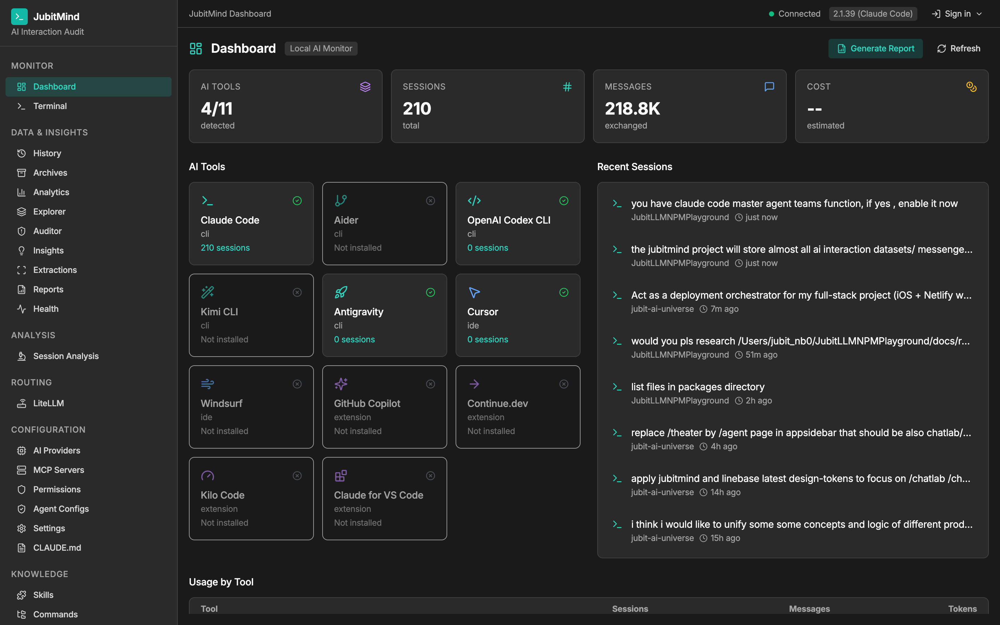
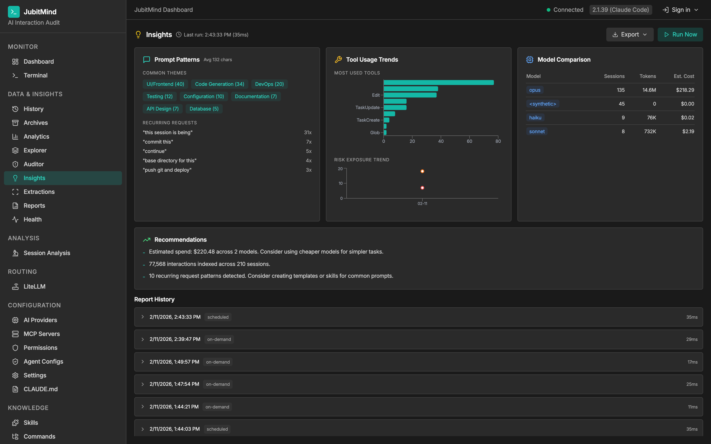
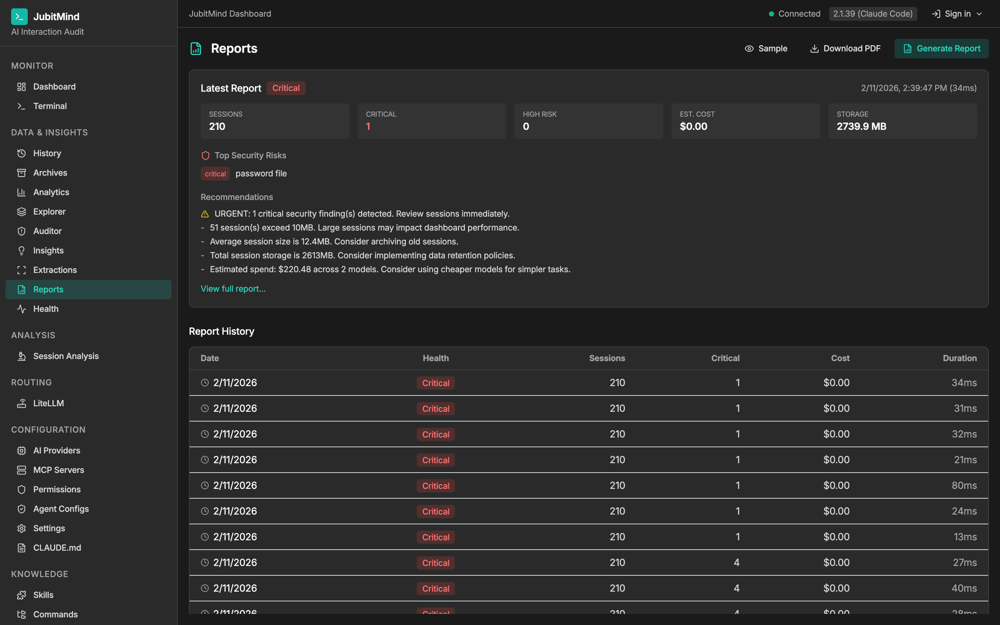

The open-source AI interaction audit platform. Risk-score, classify, and govern every human-AI conversation across 11 coding tools.
v0.77.0 · Open Source · Apache 2.0
Real dashboard views from a live instance with 210+ sessions across 11 AI tools.

Real-time overview of all AI tools, sessions, messages, and cost metrics.

AI-powered prompt pattern analysis, tool usage trends, and model comparison.

One-click security audit reports with findings, costs, and recommendations.
Developers use 3-5 AI tools daily. Today, there is zero visibility into what they do.
Valuable prompts, solutions, and architectural decisions buried in expired AI sessions.
API keys, credentials, and sensitive data exposed in AI-generated code without detection.
No visibility into token usage and spending across multiple AI tools and models.
Compliance teams have nothing to show auditors about AI-assisted development practices.
Aggregate sessions from 11+ AI coding tools in one unified dashboard with real-time refresh.
30+ detection patterns score every interaction. Background auditor scans every 30 minutes.
Prompt patterns, cost tracking, model comparison, tool usage trends, and theme detection.
One-click infographic PDF reports with charts, risk gauges, and actionable recommendations.
30+ detection patterns across security, file system, network, and git operations.
Reads sessions from Claude Code, Cursor, GitHub Copilot, Windsurf, Aider, Continue.dev, Codex CLI, Kilo Code, Kimi CLI, and Antigravity in one dashboard.
Scans 17+ config formats (CLAUDE.md, .cursorrules, copilot-instructions.md, and more) for leaked API keys, hardcoded secrets, and dangerous permissions.
30+ detection patterns classify every tool call as Critical/High/Medium/Low — catching credential exposure, destructive commands, SQL injection, and more.
Your conversations never leave your machine. Zero cloud dependency. Unlike SaaS tools, JubitMind runs entirely on localhost.
Structured entity extraction, security auditing, prompt analysis, cost tracking, and PDF report generation — all under Apache 2.0 license.
Every tool your team uses, monitored in one place.
● Full support ● Adapter ready
JubitMind is built by Jubit.ai as infrastructure for the AI development ecosystem. We believe AI governance should be accessible to every developer, not locked behind enterprise pricing.
Open-source. Self-hosted. Free.
Or install from source:
git clone https://github.com/M1zwell/jubitmind.git
cd jubitmind && ./install.sh
Also available via Docker:
docker compose up -d
First launch: A setup wizard will guide you through tool detection and configuration.
We value the finest humanity and the working with AI brains for better life.
Every prompt you craft, every decision you make, every solution you co-create with AI — these are records of human intelligence amplified by artificial minds. JubitMind helps you value, protect, and govern that collaboration.
Part of the Jubit AI ecosystem.